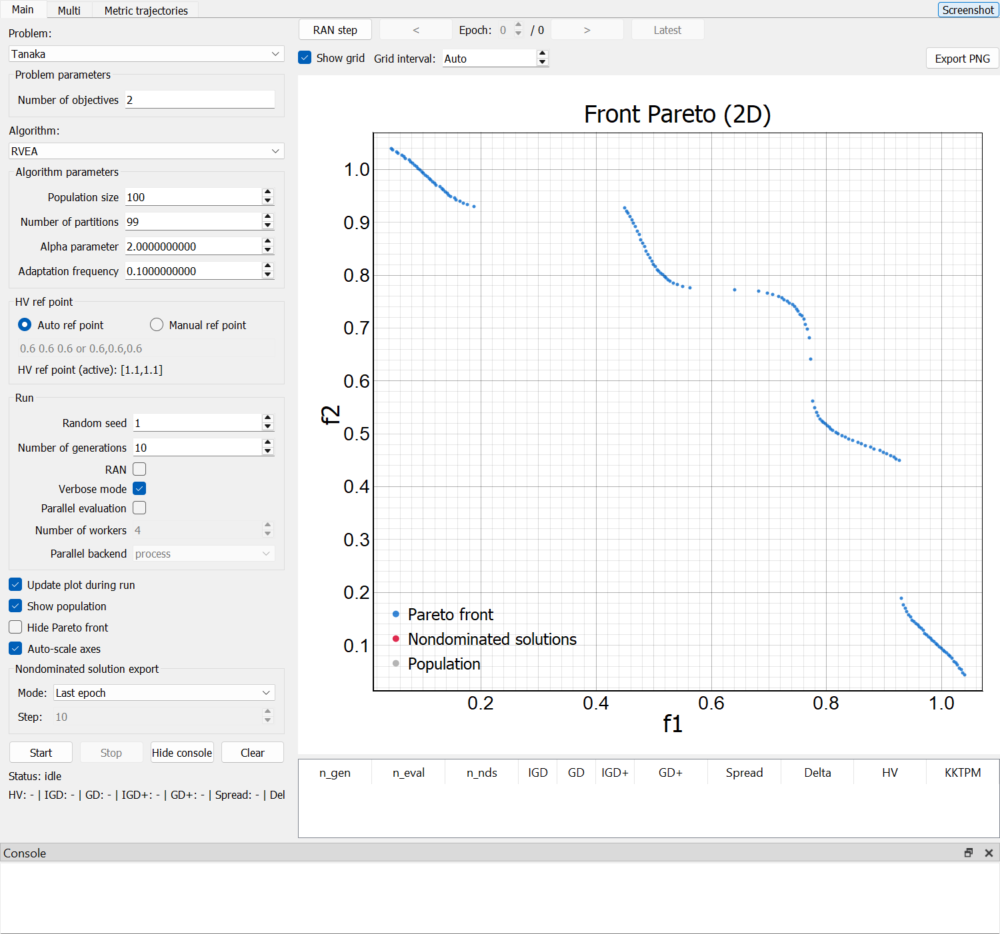

Analiza struktury projektu, kodu, aktualnej funkcjonalności, wyników weryfikacji oraz rekomendowanego kierunku dalszego rozwoju.
Framework jest działającą aplikacją eksperymentalną do optymalizacji wielokryterialnej, a nie tylko prostym interfejsem do biblioteki pymoo. Ma własne rejestry komponentów, implementacje i adaptery algorytmów, benchmarki, warstwę metryk, eksport XLSX, wykonywanie wsadowe, interaktywną historię epok oraz wizualizację wyników.
| Element | Odpowiedzialność |
|---|---|
src/pymoo_gui/app.py | Główne GUI, dynamiczne formularze, walidacja, sterowanie ciągłe i krokowe, historia epok, tabele, komunikaty i eksport. |
src/pymoo_gui/algorithms | Rejestr algorytmów, implementacje, adaptery oraz wspólny dispatcher minimize. |
algorithms/common.py | Callback generacji, normalizacja populacji, wybór rozwiązań dopuszczalnych i niezdominowanych oraz wywołanie metryk. |
src/pymoo_gui/problems | Lokalne benchmarki, rejestr problemów, fabryki oraz ładowanie znanych frontów Pareto. |
metrics/quality.py | Obliczanie wskaźników jakości, w tym uogólnionej Delta i KKTPM. |
metrics/export.py | Generowanie arkuszy XLSX bez zależności od pandas lub openpyxl. |
multi.py | Wsadowe wykonywanie iloczynu problemów i algorytmów oraz trwały zapis częściowych wyników. |
parallel.py | Opcjonalna ewaluacja osobników przez pulę procesów lub wątków. |
viz | Wizualizacja Pareto 1D/2D/3D, siatka, eksport PNG i przebiegi metryk. |
scripts | Weryfikacja EXE oraz automatyczne generowanie aktualnego katalogu funkcji. |
tests | Testy rejestrów, algorytmów, metryk, GUI, trybu krokowego, wykresów, Multi i ścieżek runtime. |
Uruchomienie rozpoczyna się w run_gui.py lub przez entry point AGtest-framework. MainWindow buduje interfejs z rejestrów PROBLEMS i ALGORITHMS. Obliczenia odbywają się poza wątkiem GUI. Standardowe algorytmy trafiają do pymoo.optimize.minimize, natomiast adaptery i algorytmy badawcze mogą udostępniać własne gui_minimize.
Historyczny pakiet pymoo_gui.algoritms pozostaje aliasem zgodności wstecznej dla kanonicznego pymoo_gui.algorithms.
Karta obsługuje kompletny pojedynczy eksperyment:
Tryb RAN nie narzuca limitu generacji. Nowy RAN step uruchamia obliczenia bez limitu, zatrzymuje worker po pierwszej generacji i wymaga jawnego polecenia kolejnego kroku. Synchronizacja opiera się na warunku wątku, nie kolejkuje wielokrotnych szybkich kliknięć i reaguje na zatrzymanie oraz zamknięcie okna.
Każda migawka wykresu jest kopiowana do historii. Użytkownik może przejść do poprzedniej lub następnej obliczonej epoki, podać numer albo wrócić przez Latest. Przeglądanie starej epoki nie zatrzymuje rejestrowania nowych metryk.
Karta wykonuje iloczyn wybrane problemy × wybrane algorytmy. Obsługuje wielokrotny wybór, limit generacji, wspólne ziarno, pasek postępu, status kombinacji, anulowanie i kontynuowanie po błędzie pojedynczego uruchomienia. Wyniki zakończonych lub częściowo wykonanych przebiegów są zachowywane; każda kombinacja otrzymuje osobny plik metryk i rozwiązań. Karta celowo nie renderuje wykresów.
Ograniczenie: Multi nadal używa domyślnych parametrów rejestru i jednego ziarna dla wszystkich kombinacji.
Karta pokazuje osiem osobnych wykresów wartości względem generacji: IGD, GD, IGD+, GD+, Spread, Delta, HV i KKTPM. Brak poprawnej wartości jest oznaczany jako N/A. Eksperymenty Multi nie zmieniają tych wykresów. Dla Spread, Delta i KKTPM wyłączono skróty SI, aby prezentować pełne wartości dziesiętne.
Zarejestrowane są: AGE-MOEA, Eps-MOEA, Eps-NSGA-II, GDE3, HypE, IBEA, Learning-across-problems EDMO, LMOEA-DS, MOEAD, MOEA/D z rodziny epsilon przez Platypus, NSGA-II, NSGA-III, R-NSGA-III, RVEA, SPEA2, RNN-guided DMO oraz TS-NSGA.
Framework integruje standardowy obiekt pymoo, adapter biblioteki zewnętrznej albo własny algorytm z metodą gui_minimize. empty_algorithm_template.py pozostaje punktem startowym nowej implementacji.
| Rodzina | Liczba konfiguracji | Zakres |
|---|---|---|
| Lokalne | 12 | Binh2, ConstrEx, FON, Golinski, Kursawe, Osyczka2, Schaffer, Srinivas, Tanaka, Viennet2, Viennet3, Water |
| ZDT | 6 | ZDT1–ZDT6 |
| DTLZ | 7 | DTLZ1–DTLZ7 |
| LZ09 | 9 | LZ09_F1–LZ09_F9 |
| UF | 10 | UF1–UF10 |
| WFG | 18 | WFG1–WFG9, każdy osobno w 2D i 3D |
Łącznie rejestr udostępnia 62 konfiguracje. Pakiet samodzielny zawiera 49 lokalnych plików .pf. empty_benchmark_template.py dostarcza klasę zgodną z pymoo, walidację, wektorowe _evaluate, fabrykę, generator frontu i metadane formularza.
| Metryka | Warunki i obecne zachowanie |
|---|---|
| HV | Wymaga punktu referencyjnego o wymiarze zgodnym z liczbą celów. |
| GD / IGD | Wymagają znanego frontu Pareto i zgodnej liczby celów. |
| GD+ / IGD+ | Jak wyżej; używają implementacji wskaźników z pymoo. |
| Spread | Obliczany z bieżącego zbioru celów jako znormalizowana miara odległości punktów. |
| Delta | Uogólniona dla wszystkich algorytmów i 2, 3, 5 oraz większej liczby celów; uwzględnia brak ekstremów i nierównomierność rozstawu. |
| KKTPM | Wymaga zmiennych decyzyjnych i problemu; wykorzystuje pochodne analityczne albo różnice skończone. |
Callback filtruje rozwiązania niedopuszczalne, wyznacza front niezdominowany i dopiero na nim oblicza wskaźniki. Do GUI trafiają także n_gen, n_eval i n_nds.
Framework buduje skoroszyty XLSX bez pandas i openpyxl. Plik metryk zawiera historię generacji, ewaluacji, liczby rozwiązań niezdominowanych i wskaźników. Plik rozwiązań zawiera identyfikator, wartości f1...fN oraz — gdy są dostępne — zmienne x1...xN. Rozwiązania można zapisywać dla ostatniej generacji, co N generacji albo kaskadowo.
W uruchomieniu źródłowym wyniki trafiają do katalogu projektu. W samodzielnym EXE foldery metrics_tables i solution_tables są tworzone obok pliku wykonywalnego, niezależnie od katalogu roboczego.

PATH i z zablokowaną siecią.AGtest-framework.exe ma właściwości FileVersion 0.1, ProductVersion 0.1 i opis AGtest-framework v0.1. Skrypt wydania generuje raport testu, wersje zależności i SHA-256.NSGA-III waliduje obecnie liczbę kierunków względem populacji, co eliminuje część niebezpiecznych konfiguracji. Nadal nie istnieje centralna macierz możliwości dla całego iloczynu Multi. Domyślne punkty R-NSGA-III są 2D, pymoo.MOEAD nie obsługuje każdego problemu z ograniczeniami, a RVEA może wygenerować bardzo dużą liczbę kierunków dla wielu celów.
Należy dodać deklaratywną macierz zgodności, walidację przed startem, wspólny limit kierunków i automatyczne dopasowanie parametrów do n_obj.
Automatyczny punkt jest zasadniczo wektorem 1.1, z wyjątkiem DTLZ1 3D. Nie jest to uniwersalne dla WFG, Kursawe, Water i innych skal. Punkt HV powinien być metadanym problemu, wspólny dla porównywanych algorytmów i zapisany wraz z wynikiem.
Jeden seed nie wystarcza do naukowego porównania metod stochastycznych. Multi powinno przyjmować listę seedów lub liczbę powtórzeń, a raport zbiorczy powinien zawierać średnią, medianę, odchylenie, kwartyle, przedziały ufności, ranking i odpowiednie testy statystyczne.
Delta ma teraz testy ręcznie obliczalnych przypadków, brakujących ekstremów, nierównomiernego rozstawu, odwróconej kolejności, duplikatów, wartości niefinitych, wykonalności i wielu wymiarów. Pozostałe wskaźniki nadal wymagają jednolitej dokumentacji wzoru, źródła, kierunku optymalizacji oraz zachowania przy pustym froncie.
Liczba testów wzrosła z 19 do 92. Dodano pokrycie Delty, sterowania krokowego, historii, eksportu PNG, zakresów osi, zamykania workera, wyglądu okna, ścieżek wyników i samodzielnej paczki. Nadal potrzebne są testy matematycznej zgodności wszystkich algorytmów, pełnej macierzy algorytm–problem i dystrybucji wheel/sdist.
Eksport powinien zawierać arkusz Metadata lub manifest: algorytm, problem, wszystkie parametry, seed, limit, punkt HV, czasy, status, błąd, liczbę ewaluacji, wersje środowiska i identyfikator commita. Obecna konfiguracja nadal nie jest w pełni trwale związana z każdym wynikiem.
app.py ma około 2450 wierszy i łączy GUI, formularze, walidację, wątki, historię epok, prezentację, eksport i tłumaczenie tekstów. Naturalny podział to moduły kart GUI, formularze i walidacja, kontroler uruchomienia, konfiguracja eksperymentu, model wyniku i usługa eksportu.
W GUI i eksporcie współistnieją terminy Generation i Epoch. Warstwa translate_ui_text nadal kompensuje historyczne teksty. Docelowo komunikaty powinny być bezpośrednio zapisane poprawnym angielskim UTF-8, a terminologia ujednolicona.
| Obszar | Zmiana |
|---|---|
| Wersja produktu | Jedno źródło wersji 0.1, tytuł v0.1 oraz właściwości Windows EXE. |
| Sterowanie | RAN step, bezpieczne oczekiwanie workera i przegląd historii epok. |
| Wykres | Siatka i jej interwał, większe elementy, eksport kompletnego PNG i screenshot okna. |
| Delta | Obsługa wszystkich algorytmów i wielu wymiarów zamiast ograniczenia do NSGA-II 2D. |
| Trajektorie | Pełne wartości dziesiętne oraz konsekwentne N/A. |
| Testy | Wzrost z 19 do 92 oraz test samodzielnego EXE. |
| Dokumentacja | Aktualny zrzut GUI, generowany katalog funkcji i rozszerzony raport. |
README.md — instalacja, architektura, przepływy i rozszerzanie frameworka;docs/FUNCTION_CATALOG.md — generowany katalog aktualnych deklaracji;build/standalone-self-test.json — raport weryfikacji samodzielnego EXE;src/pymoo_gui/algorithms/empty_algorithm_template.py — szablon algorytmu;src/pymoo_gui/problems/empty_benchmark_template.py — szablon benchmarku;docs/AGtest_framework_analysis_PL.html — edytowalne źródło niniejszego raportu.Raport powstał na podstawie analizy lokalnego kodu, rejestrów, testów, starej wersji raportu oraz samodzielnego testu dystrybucji Windows. Zachowuje strukturę i charakter wcześniejszego dokumentu, aktualizując go do stanu v0.1 z 22.09.2026.